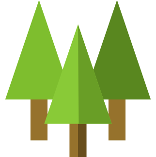
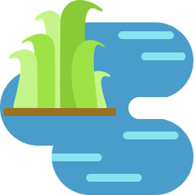

Go beyond the obvious--"It has big green leaves"--to expertly identify plants! Here are some tools and tips to help you know what to look for.
Helpful Tools
-
Bring one that is marked with both inches and metrics, as some field guides only use metric measurements, while others may use inches.
-
Using one that has at least 10x power will allow you to explore the details of leaves, stems, and more.
-
Some trees can reach over 50 feet in height! This will allow you to look at details that are higher up.
-
Whether you use your phone, an advanced SLR camera, or a digicam, taking pictures will be helpful for taking field notes.
-
It can be helpful to know certain terms! Check out our glossary here.
What to Look For
Type of plant
What is it? A tree? A shrub? A forb? What
is a forb? (Check our
glossary to find out!)


Environment/Habitat
Where is it? Plants usually have very specific requirements for their habitats and communities.
Leaf branching
Do the leaves branch out in the same spot but in opposite directions? Do they follow a more alternating pattern?
Flower petals
Fun fact: all plants have flowers. For some plants, their flowers only last a short amount of time, which is why we don't "see" them.
Leaf shape
What shape is the leaf? Because this is a whole art onto itself, we have provided an extensive guide for you
here.